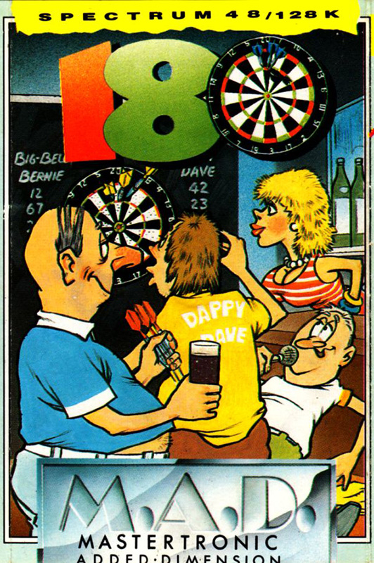
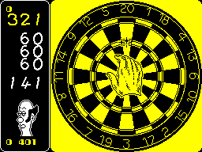

180


{kind=link}

| Publisher: | Mastertronic |
| Price: | £2.99 |
| Year: | 1984 |
| Source: | CRASH, Issue 35 |
Oneehudredaneighteeee, the bellicose amplified sound echoes around the smoke filled, beer laden tables of the local working man's club. And on the stage, two lads with over size guts working away at a spectrum.

All the fun of Britain's most popular indoor sport conies courtesy of those busy lads from the Binary Design team. Can you topple Jammy Jim, World Champion and ace darts player from his No. 1 slot?
After selecting the controls, you are presented with three different games; two player, one player, or practice. The practice game takes you 'round the clock'. The idea is to run down from twenty to one in one hundred seconds.
When it's your turn to throw, the screen shows a close up view of the dart board, and you control a large hand holding a dart. The hand moves in four directions diagonally across the board, moving in the direction it was last pushed in. You hit fire to throw the dart The dart is also being 'waggled', so depending on the exact moment the dart was released, the trajectory will vary, and thus the final position on the board.
After three shots, the darts get handed to your opponent. If you're playing the computer, the display switches to a side view of the board, showing your good self proping up the bar whilst a bar maid recharges your glass and your opponent does his stuff with the darts.
You can play the main game against a friend, or the computer. You start at 501 and work down, double to finish. To beat the computer, you play three matches. The first two are the best of three against such stars of the silver arrows as Delboy Des, Devious Dave or Limp Wrist Larry. The final is against Jammy Jim. Trouble is, he throws perfect darts. Your only advantage is that you go first. This guy is very hard to beat. he finishes every game in nine darts! The game packaging also contains a very handy table giving you the best scores to aim at to go Out.
CRITICISM
'There isn't really anything here that is done badly, it is presented in an average way both graphically and sonically, the game does get a bit boring after a short while due to the simplicity of the subject matter. On the whole this isn't a bad little game but I wouldn't recommend it as It gets monotonous after a while.'
'Oh no not darts again, I hear you cry! But this is different believe me! 180 is a whole new different concept of darts computer playing. The graphics are superb — a brilliant combination of large detailed graphics and pleasing colours. The animation of the hand is extremely well done and the darts fly out of it very smoothly. The only thing I missed was the North ern accent of Sid VVaddell commentating in the background. 180 must is definitely the best and most addictive darts game around.'
'The graphics on the throwing screen are excellent, but I think a little too much colour has been used on the opponent's throwing screen. Loads of featurettes have been put in, like the little dog who cocks his leg on the bar, and all sorts of things that make it really interesting to play. I would have liked to see a 'score required' indication, for non-mathematicians like myself, and I was a little disappointed to find that the finalist NEVER makes a mistake, but other than that, I think this is a Darts game that anyone is going to find it hard to match.'
COMMENTS
| Control keys: | Redefinable; left, right, up, down, throw |
| Joystick: | Kempston, Sinclair, Cursor |
| Keyboard play: | Awkward |
| Use of colour: | Limited |
| Graphics: | Well detailed |
| Sound: | Unintelligible speech |
| Skill levels: | One |
| Screens: | Two |
| General rating: | Best ever darts game |
| Use of computer: | 68% |
| Graphics: | 68% |
| Playability: | 70% |
| Getting started: | 75% |
| Addictive qualities: | 65% |
| Value for money: | 77% |
| Overall: | 72% |